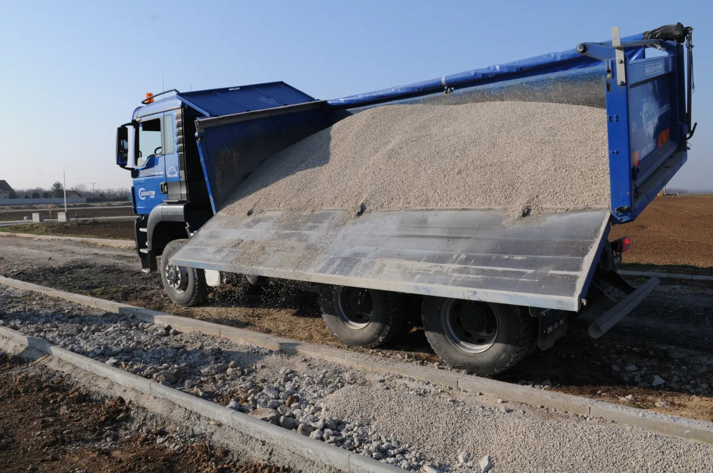
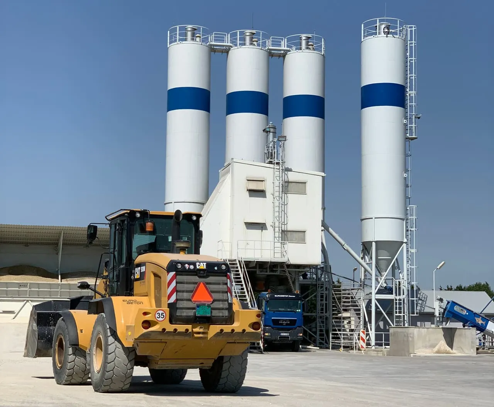

01

Výroba betónu
Bežne používané triedy C8/10 až C40/50, stabilizácie CBGM, cestné betóny a receptúry podľa požiadaviek stavby.
Pozrieť ponuku betónovBetonáreň Senec
Vyrábame certifikované betónové zmesi, zabezpečujeme vlastnú dopravu a čerpanie. Dodáme aj kamenivo a ďalšie sypké materiály.
Aktuálne cenníky a certifikáty 2026 sú dostupné na stiahnutie.
Kompletná dodávka
Od výroby zmesi cez dopravu až po čerpanie na miesto uloženia. Jednotlivé služby si vyberiete podľa stavby.
Bežne používané triedy C8/10 až C40/50, stabilizácie CBGM, cestné betóny a receptúry podľa požiadaviek stavby.
Pozrieť ponuku betónov
Autodomiešavače MAN a Tatra Phoenix, betonpumpy PUTZMEISTER M28 a M36 aj kompaktný domiešavač s pumpou PUMI 28.
Vybrať vhodnú techniku
Ťažené aj drvené kamenivo, štrkopiesky a ďalšie sypké materiály. Nakládka s vážením a doprava sklápačmi.
Pozrieť ponuku kameniva
Kontrola výroby
Výroba na linke BHS 2.0 je plne automatizovaná. Systém riadi dávkovanie a váženie kameniva, cementu aj prísad a umožňuje spätné overenie dodávky.
Jednoduchšia objednávka
Čím presnejšie podklady pošlete, tým ľahšie sa dá vybrať vhodná zmes, doprava a technika.
Uveďte triedu alebo použitie betónu či typ kameniva a predpokladané množstvo.
Napíšte adresu stavby, prístupové možnosti a požadovaný dosah čerpania.
Doplňte preferovaný dátum, meno a telefón, na ktorom sa dajú overiť detaily.
Pre malé aj veľké stavby
Betón na základy, dosky či menšie práce. Pri obmedzenom priestore môže byť vhodné PUMI – domiešavač a pumpa v jednom.
Výroba, koordinácia dopravy a čerpanie pomocou vlastnej techniky pre priebežné aj väčšie betonáže.
Betónové zmesi a logistika pre podlahárske realizačné tímy; receptúry sa spresnia podľa požiadaviek projektu.
Dôvera z praxe
Pôvodný firemný web uvádza stabilnú spoluprácu so stavebnými a podlahárskymi spoločnosťami.
Časté otázky
V ponuke sú bežne používané triedy C8/10 až C40/50, stabilizácie CBGM 3/4, 5/6 a 8/10, cestné betóny CBIII a receptúry podľa požiadaviek, napríklad drátkobetón, potery alebo polystyrénbetón.
Áno. Čerstvý betón sa dopravuje autodomiešavačmi MAN a Tatra Phoenix. Na čerpanie sú podľa pôvodného webu k dispozícii betonpumpy PUTZMEISTER M28 a M36 a PUMI 28.
PUMI spája domiešavač a pumpu. Je vhodné najmä pri menších prácach a v obmedzenom priestore, kde by bolo samostatné automobilové čerpadlo nákladné alebo sa nezmestí.
Betonáreň má ohrev zámesovej vody, zateplenie a vykurovanie. Tieto opatrenia podľa údajov firmy umožňujú plynulú výrobu aj v zhoršených zimných podmienkach.
Cenníky platné od 1. 3. 2026 a certifikáty z 15. 5. 2026 sú uložené priamo v tomto webe vo formáte PDF.
Pripravení objednať?
Objednávky a vedúci prevádzky: Ing. Róbert Beták